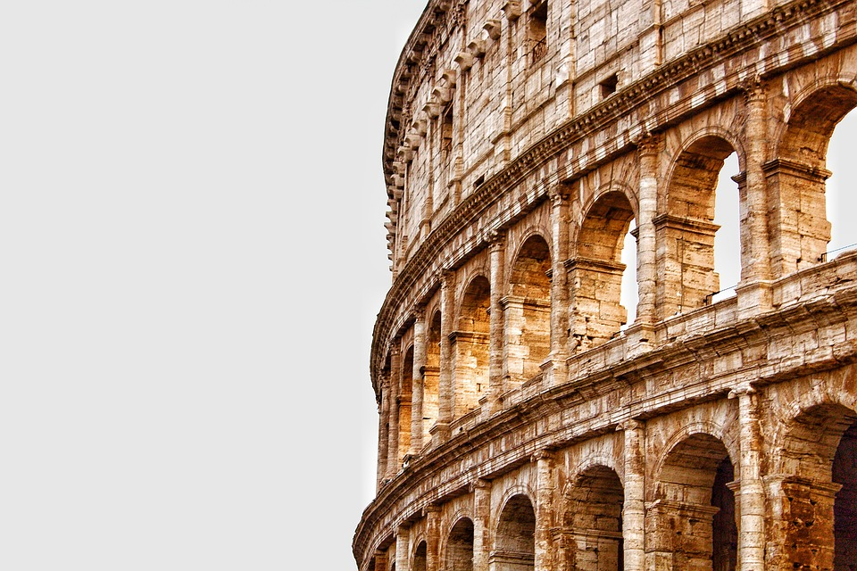
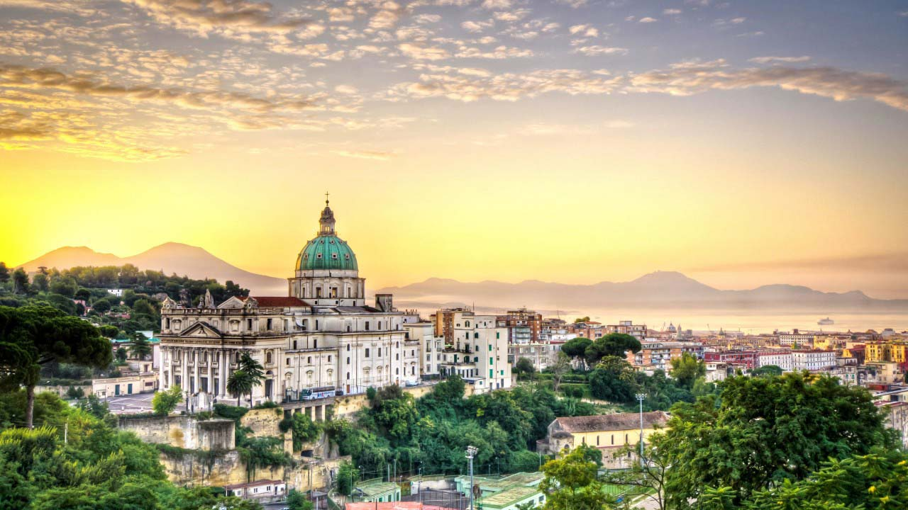

Italy
Италия – удивительная страна, в которой переплелись история и современность, различные эпохи и богатое культурное наследие,
традиции и самобытность. Памятники старины времен Рима, очаровывающая романтика Венеции, холмистая панорама Тосканы, южные склоны Альп,
чудесная природа, солнце, море, воздух – всё это Италия! Имеющая уникальное географическое расположение в центральной части
Средиземноморья, она стала колыбелью европейской цивилизации. Здесь, на Апеннинах, зародилась древняя Римская империя,
давшая миру знаменитых ученых, талантливых художников и самое большое число достопримечательностей,
составивших золотой фонд Всемирного наследия ЮНЕСКО.
Италию населяет замечательный народ, известный своим горячим южным темпераментом, открытостью, удивительной общительностью,
непринужденностью и гостеприимством. Кто-то метко подметил, что каждый итальянец – это «театр одного актера», подразумевая,
что жителям страны присущи индивидуальность, свободный стиль в одежде, неповторимая жестикуляция, эмоциональность.
Кажется, что итальянцы абсолютно свободны и делают только то, что им нравится. И стоит ли удивляться, что сюда, на юг Европы, туристов притягивает словно магнитом. Для путешественников в Италии есть всё, что только душа пожелает: обилие интересных мест, отличные пляжи, великолепные трассы, разнообразная и бесподобно вкусная кухня.
Кажется, что итальянцы абсолютно свободны и делают только то, что им нравится. И стоит ли удивляться, что сюда, на юг Европы, туристов притягивает словно магнитом. Для путешественников в Италии есть всё, что только душа пожелает: обилие интересных мест, отличные пляжи, великолепные трассы, разнообразная и бесподобно вкусная кухня.
Города Италии

Рим
Cтолица Италии, один из старейших городов мира.
Венеция
Cамый романтичный уголок Европы.
Милан
Второй по величине город Италии, центр моды и стиля.
Флоренция
Гордость Италии и один из красивейших городов мира.
Римини
Известный итальянский курорт на адриатическом побережье.
Пиза
В северной части Центральной Италии, символ – Падающая башня.

Неаполь
Столица административной области Кампании, у подножия Везувия.
Верона
В северной части Италии, второй по величине .

Генуя
Главный город и морской порт северной части Италии.
Природа
Природный ландшафт на севере Италии определяют Альпы, где берут свое начало ручьи, сливающиеся в реки, которые, в свою очередь, образуют систему водных артерий Паданской равнины. Наиболее крупные водные артерии страны – реки По, Тибр, Арно, Адидже, Адда, Тичино и ряд других. Горные массивы перерезают долины, луга и перевалы. Тут находится множество горных озер.
Живописные холмы, с кипарисовыми и оливковыми рощами, цветущими садами и виноградниками, определяют ландшафт центральной части республики. А вот южные регионы более разнообразны по своей природе и отличаются определенной контрастностью. Италия омывается пятью морями – Средиземным, Лигурийским, Тирренским, Ионическим и Адриатическим. Вдоль побережья доминирует пышная растительность, а в глубине «итальянского сапога», где почвы более засушливы и менее плодородны и есть горы, такого буйства флоры не наблюдается. Побережье Апеннинского полуострова и острова Сицилия часто называют «царством растений». Здесь произрастают «культурные» олива, инжир, цитрусовые, миндаль, лавр, гранат.
Фауна Италии столь же многогранна, хотя дикие животные в основном содержатся в заповедниках. Медведи и кабаны, волки, косули, серны, а также обитающие преимущественно в Альпах лисицы – всё это представители животного мира Апеннин. Для страны, где превалирует субтропический климат, характерно наличие змей, ящериц, черепах. Повсеместно встречаются птицы, которых тут насчитывается примерно 400 видов. Утки и гуси предпочитают селиться по берегам озер, а грифы, беркуты, глухари, стрижи – в горах.
На равнины в Италии приходится не больше 1/3 территории, а значит гор здесь действительно много. Помимо Альп также имеются Апеннинские горы, которые можно назвать "хребтом страны". Горные массивы популярны среди профессиональных альпинистов и увлекающихся скалолазанием туристов. Особенный интерес вызывают вулканы. Многие до сих пор являются действующими, хотя особенной активности не проявляют: известные Везувий и Этна, Стромболи.
Видео
Оставьте заявку
Если вы желаете узнать подробности о турах в страну,эксурсиях по городам и прейскурант цен,
отправьте нам сообщение, и в ближайшее время мы ответим.